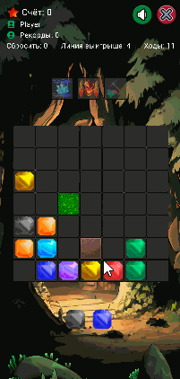

SpiritualAdviser
Через некоторое время игра усложняется добавлением препятствий в виде камней и травы.
Целью является набор максимального количества очков для таблицы рекордов.

Размер игрового поля фиксированный.
Логика просчета колизий. запуска уровней идентична игровому режиму приключения.
Настройка уроня не доступна для гейм дизайнера.
Через некоторе время добавляем препятствия.
Игра продолжается пока есть свободные места на игровом поле.
Так же после сброса линии показываем анимацию обычного и мегасброса
если игрок сбросил больше кристалов чем указана в уровне.
Это реализовано с помощью graphicsLayer и scale анимации.